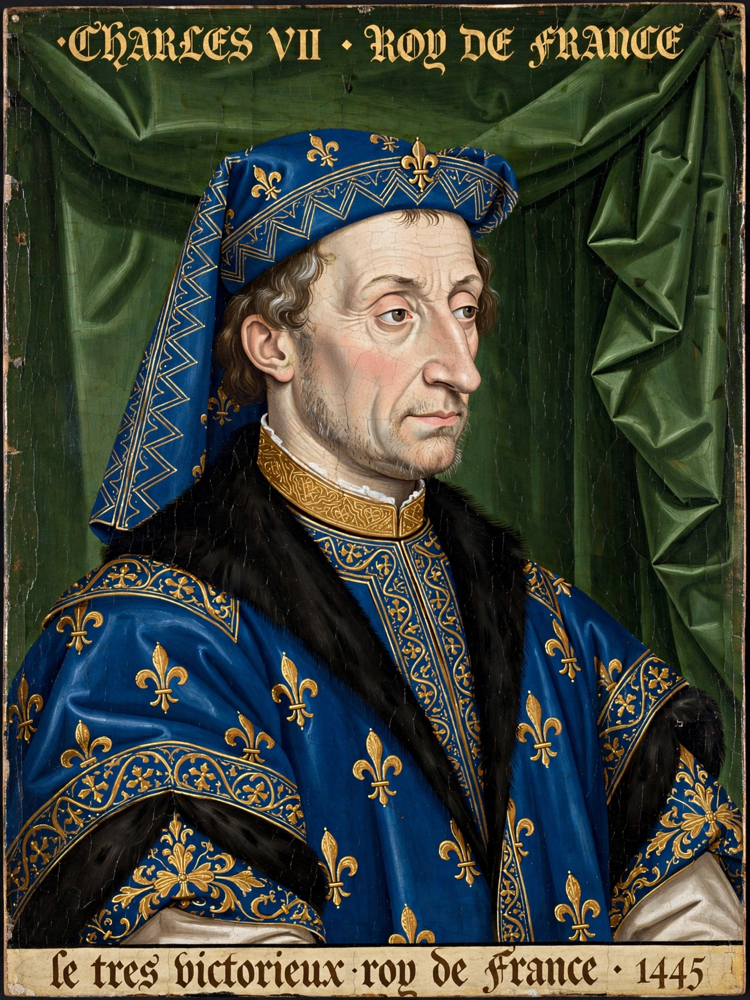

Charles VII (22 February 1403 – 22 July 1461), called the Victorious (le Victorieux) or the Well-Served (le Bien-Servi), was King of France from 1422 until his death. Disinherited by the Treaty of Troyes (1420) and derided as the "King of Bourges" for his shrunken domain, he was crowned at Reims in 1429 through the intervention of Joan of Arc, and went on to win the Hundred Years' War, expelling the English from all of France except Calais.
 | |
| Reign | 21 October 1422 – 22 July 1461 |
|---|---|
| Coronation | 17 July 1429, Reims Cathedral |
| Predecessor | Charles VI |
| Successor | Louis XI |
| Born | 22 February 1403, Paris |
| Died | 22 July 1461, Mehun-sur-Yèvre |
| Spouse | Marie of Anjou |
The fifth son of the intermittently mad Charles VI, Charles became Dauphin in 1417 amid civil war between Armagnacs and Burgundians. After the murder of John the Fearless of Burgundy at Montereau (1419) — in the Dauphin's presence — Burgundy allied with England, and the Treaty of Troyes recognised Henry V of England as heir to France. On Charles VI's death in 1422, Charles proclaimed himself king but controlled little beyond the Loire.
In 1429 the peasant visionary Joan of Arc convinced Charles to give her troops; she relieved the siege of Orléans in May, and French victories culminating at the Battle of Patay opened the road to Reims, where Charles was anointed on 17 July 1429. Joan was captured in 1430 and burned in 1431; Charles did little to save her, though he sponsored the nullification trial of 1456.
The Treaty of Arras (1435) detached Burgundy from England. Charles and his ministers — among them the financier Jacques Cœur and his mistress Agnès Sorel — rebuilt royal government: a permanent tax (the taille), standing compagnies d'ordonnance, and a formidable artillery train under the Bureau brothers. Paris was recovered in 1436, Normandy in 1449–50 (Formigny), and Gascony in 1451–53 (Castillon, where Talbot was killed), ending the war. Charles died in 1461, estranged from his son, the future Louis XI.
From Wikipedia, the free encyclopedia.